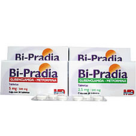
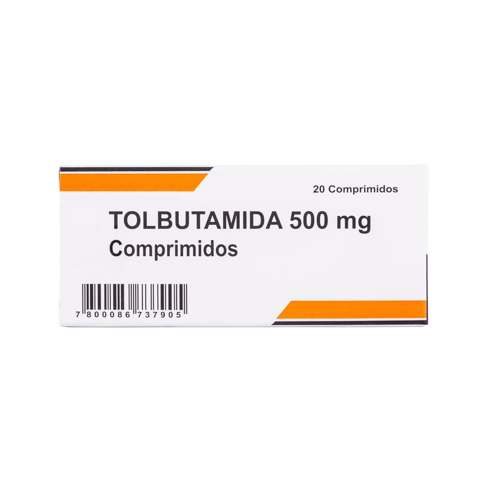
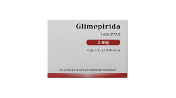
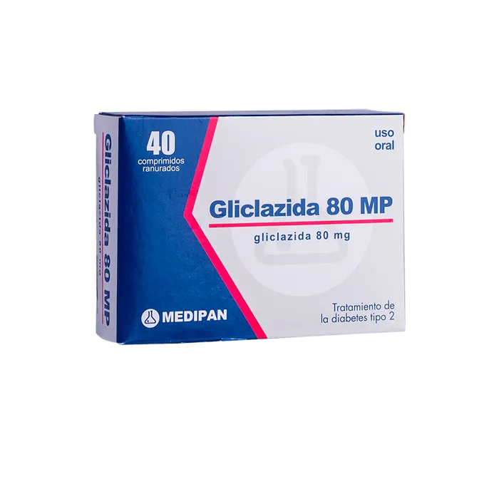

Bloqueo de los canales de potasio sensibles a ATP (K-ATP) en las células beta pancreáticas
Las sulfonilureas se unen a un receptor específico (SUR1) en los canales de potasio de la membrana de las células beta.
Esto inhibe la salida de potasio causando una despolarización de la membrana celular.
Apertura de los canales de calcio (Ca²⁺)
La despolarización provoca la apertura de los canales de calcio voltaje-dependientes, permitiendo la entrada de calcio (Ca²⁺) al interior de la célula.
Exocitosis de insulina
El aumento del calcio intracelular estimula la liberación de insulina almacenada en los gránulos de secreción de las células beta.
Esto reduce los niveles de glucosa en sangre, mejorando la captación de glucosa en tejidos como el músculo y el hígado.
clorpropamida
Tratamiento de inicio en diabetes tipo 2 debe acompañarse siempre de dieta, ejercicio y control de factores de riesgo cardiovascular.
Dosis Inicial:
Generalmente 250 mg al día, con el desayuno. En ancianos o pacientes de alto riesgo: 100–125 mg/día. Ajustes cada 3–5 días en incrementos de 50–125 mg.
Dosis De Mantenimiento:
Promedio: 250 mg/día. Casos leves: 100–125 mg/día. Casos severos: hasta 500 mg/día. No exceder 750 mg/día.
Transición desde insulina u otros hipoglucemiantes:
Suspender el anterior y comenzar clorpropamida directamente. Si el paciente usaba >40 U de insulina/día, reducir 50% al iniciar clorpropamida.
Combinación con biguanidas:
Metformina: iniciar con 0.5 g 2x/día, aumentar gradualmente (máx. 3 g/día). Fenformina: no exceder 100 mg/día. Posterior reducción gradual de uno de los fármacos para mantener control con la mínima dosis.
En diabetes insípida:
Dosis: 100–500 mg/día. Iniciar con dosis bajas, riesgo de hipoglucemia. Suspender si hay enfermedades intercurrentes o disminución de la ingesta.
Niños: No se recomienda.
Ancianos/debilitados/desnutridos: Dosis conservadoras por mayor riesgo de hipoglucemia.
Glibenclamida
La dosis debe individualizarse y empezar baja, incrementándola gradualmente según la glucemia. Iniciar con 1 tableta al día antes de la comida principal; si la glucosa es alta, usar 2 tabletas (desayuno y comida). Aumentar ½ tableta cada 2 semanas si es necesario, sin pasar de 4 tabletas al día. Una vez controlado, reducir a la dosis mínima eficaz.
Marca: Antigram
Primera generación: Tolbutamida, Clorpropamida (Marca DIABINESE) Segunda generación y con menos efectos adversos: Glibenclamida (Marca BI-PRADIA) , glimepirida, gliclazida.
Hipoglucemia
Puede ser grave, especialmente en ancianos o con insuficiencia renal.
Aumento de peso
Alteraciones gastrointestinales.
Reacciones alérgicas (poco frecuentes)
Efectos hematológicos .(raros) Agranulocitosis, anemia hemolítica, trombocitopenia
Hepatotoxicidad (rara) Elevación de enzimas hepáticas o ictericia colestásica.